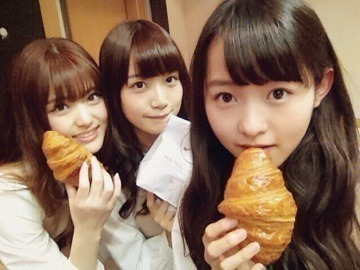
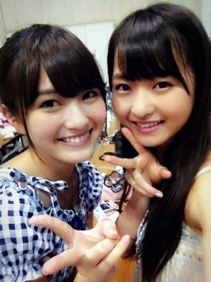
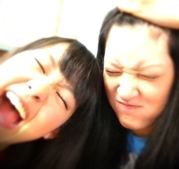
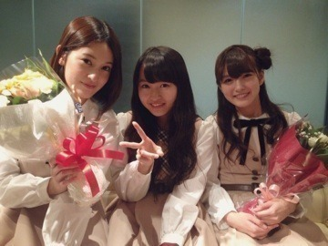

差し入れでいただいたクロワッサン。
さくさくですって
4thのヒット祈願で
みんなが頑張って滝行やってるの
テレビの前で見て
あぁーこんなの絶対辛いよな...
と他人事のように思ってた私がついに
滝行してまいりました！
神奈川の滝。
し！ろ！はったあげーたーーーー
普段ペットボトルのミルクティーは
あまり飲まないけど
滝行終わりにいただいた
ペットボトルのミルクティー(ホット)
を飲んだ時この世でいちばん美味しい
と感動しておりました。
健康祈願！
ボローーーーーーーーーン！！！！！
日曜日はお茶会サイン会でした。
お茶会は当たったファンの方5人と
私で神経衰弱という...
楽しめましたか？
どうしようかわからなくて
ずっと笑ってました！
あわわわーってなった。
サイン会はファンの方5人の私物に
サインをしゃしゃしゃーと。
それぞれの私物が個性的で...
嬉しかったなあ。
おしゃべりもたくさんできました^^
どちらともまったりと
楽しい時間を過ごせた。
ありがとうございました！いえーい


せっちゃん、ゆきな
寂しくないよ。
いつでも会えるから。
2人のこと応援してるよ！

卒業おめでとう！
まりか